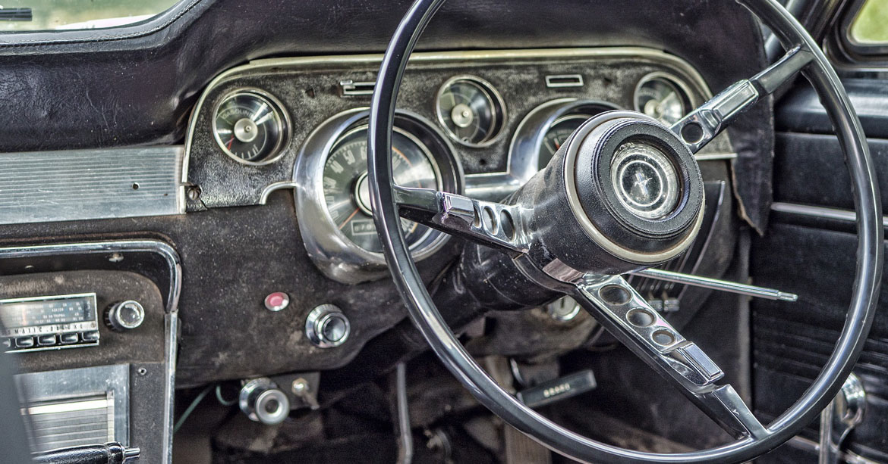

I thought I would build on (pun intended) my last article Seeing Art in Architecture.
It’s car show season here in the Midwest and shooting them can be quite fun, yet they pose some unique challenges. Many of the techniques and principles used in photographing architecture can be applied to shooting vehicles.
Put Your Camera Down
It can be overwhelming when you first walk onto the grounds of a car show, so many cars, so many shiny objects, and so many people. Walk around first and get the lay of the land. Are there groups of certain models, are there some really rare cars, are there any other special events going on such as live bands, booths with items for sale, food vendors? Scope out the vehicles that catch your eye and remember where they are to come back to when you’re ready to shoot. It can also help to do a bit of research on the particular show you plan on attending, do they specialize in anything, what will the location be like, and important details like the dates and hours of the show.

Details
This is a fun one. So many details on the cars, in the cars, in the chrome surfaces, and in mirrors. The possibilities are endless. Taking detail shots helps tremendously in eliminating people and other distractions around the cars. Specific things to look for: door locks, radio dials, speedometers, dashboards, hood ornaments, headlights, tail lights, gear shift knobs, tail fins, and emblems are all good places to start. Using a macro and/or telephoto zoom is a great way to capture the details.
Angles and Perspectives
When you find a car you want to capture take a wander around the entire car if that’s possible. Look for interesting angles and curves, think about other perspectives that will change the look of what you’re shooting. Get low. So many car shows I’ve been to where I see photographers laying on the ground because it’s a great way to get that really cool wide angle shot. Get close, as close as you can without touching the car anyway. Getting close is another way to help eliminate distracting background elements.
Reflections
If you can’t beat ‘em join ‘em is the best way to handle reflections at a car show because they are everywhere. Chrome, mirrors, and the car bodies themselves are huge reflective surfaces. You can work to minimize reflections for some shots just by moving yourself around, higher, lower, further up to the front.

3 Comments
Cathy Donohoue
I especially love the reflection shots. You have such a gift for finding the sweet spot of what you are shooting and showcasing that. Well done.I especially love the reflection shots. You have such a gift for finding the sweet spot of what you are shooting and showcasing that. Well done.
Lauri Novak
I especially love the reflection shots. You have such a gift for finding the sweet spot of what you are shooting and showcasing that. Well done
Cathy Donohoue
I especially love the reflection shots. You have such a gift for finding the sweet spot of what you are shooting and showcasing that. Well done.I especially love the reflection shots. You have such a gift for finding the sweet spot of what you are shooting and showcasing that. Well done.